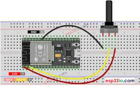
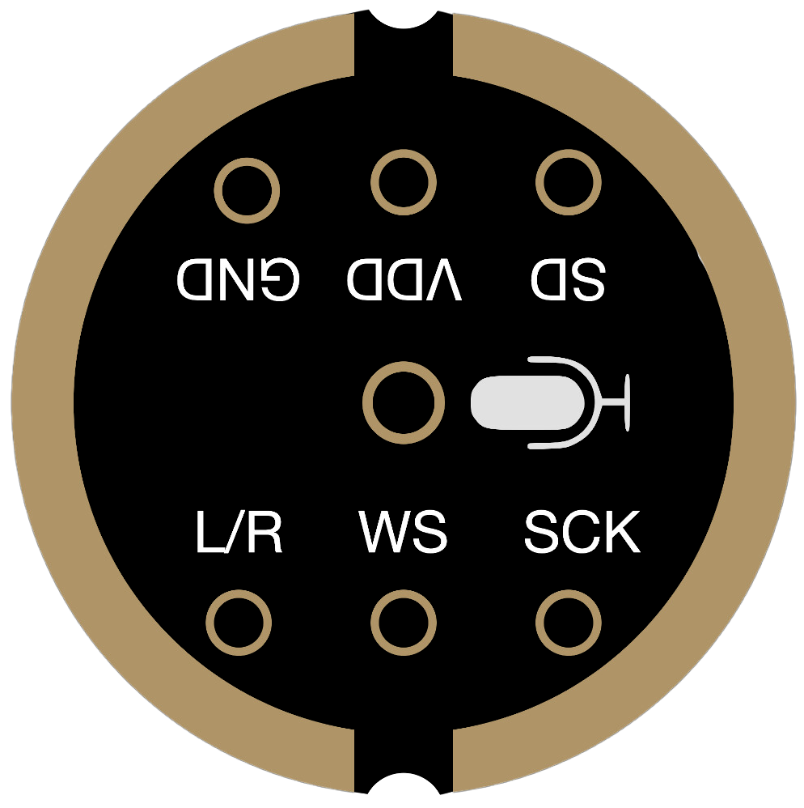
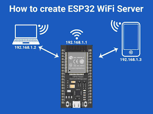

ESP32 Projects
Three beginner friendly projects to practice analog input, I2S audio, and Wi‑Fi.
1) Potentiometer Read Beginner
Goal: Read an analog potentiometer on GPIO34 and print a scaled value to the Serial Monitor.
Parts
- ESP32 board
- 10kΩ potentiometer
- Breadboard + jumper wires
Steps
- Wire: one outer leg to
3V3, the other toGND, center wiper toGPIO34(input‑only). - In Arduino IDE, open a new sketch and in
setup()startSerial.begin(115200). - In
loop(), readanalogRead(34)and map to 0–100 usingmap(). Tip: ADC2 channels are unstable with Wi‑Fi; use ADC1 pins like 32–39. - Upload and rotate the knob watch values in Serial Monitor.
2) INMP441 Microphone Level Intermediate
Goal: Read audio samples from an INMP441 I2S microphone and print a simple amplitude level.
Parts
- ESP32 board
- INMP441 I2S microphone module
- Wires
Wiring
VDD → 3V3,GND → GNDSCK → GPIO14(I2S SCK),WS → GPIO15(LRCLK),SD → GPIO32(I2S data‑in)L/Rselect: connect toGNDfor left,3V3for right channel
Steps
- Install the ESP32 I2S examples (built‑in in Arduino core).
- Use an
I2S_MODE_MASTER | I2S_MODE_RXconfig, 16‑bit samples, 16 kHz. - Read a small buffer, compute absolute average, and print a bar like
#####proportional to level.
3) Wi‑Fi Web Server Intermediate
Goal: Host a tiny webpage that toggles the onboard LED and shows device info.
Parts
- ESP32 board
- 2.4 GHz Wi‑Fi network
Steps
- Open an
ESP32 → WebServerexample. - Add SSID and password, adjust the LED pin to
2if needed. - Upload, get the printed IP from Serial Monitor, and browse to it.